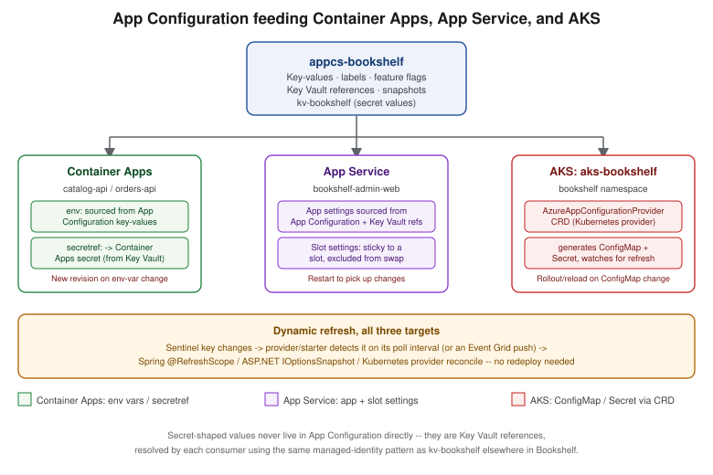

Runtime Configuration
|
This content was generated with the assistance of AI and should be verified against the official documentation before being relied on in production. |
Commands and behaviour below are current for Azure CLI 2.90.0 (checked 2026-09-26); re-verify against
az version and the linked reference pages before relying on them in a pipeline.
The problem: three kinds of values, one per environment
Every one of Bookshelf’s services — catalog-api, orders-api, notifier — needs values at startup and at
runtime that fall into three different categories, each with a different owner and a different change cadence:
-
Plain configuration — a log level, an external endpoint URL, a page size, a timeout. Not sensitive; safe to read in plaintext, safe to show in a diff.
-
Secrets — a database connection string’s credential portion, a third-party API key. Never plaintext at rest, never in source control, access itself audited. Covered in depth on Key Vault and Secrets; this page only covers how the mechanisms below reference a secret, not how Key Vault stores or rotates one.
-
Feature flags — a boolean (or multi-variant) switch that changes behaviour without changing a build, so a feature can ship dark and be turned on for a subset of traffic without a deployment.
All three also vary per environment — catalog-api in dev polls a sandbox payment gateway with a relaxed
timeout; the same code in prod points at the real gateway with a strict one — and, increasingly, teams want to
change any of these without redeploying: flip a flag, raise a timeout, roll a secret, and have running
instances pick it up on their own. That is what the rest of this page covers: one Azure-native store built for
exactly this job (App Configuration), and the platform-specific mechanisms — Container Apps, App Service, and
Kubernetes on AKS — that either consume it directly or offer their own simpler alternative for the same three
categories.
Azure App Configuration
Azure App Configuration is a managed key-value store purpose-built for centralizing an application’s configuration and feature flags — separately from its secrets, which stay in Key Vault and are only referenced from here.
Tiers
App Configuration currently ships four tiers — re-verify against the pricing page before quoting a number, since limits move between reviews of this page:
| Tier | What it is for |
|---|---|
Free |
No cost; one store per subscription; 10 MB of key-value storage plus 10 MB of snapshot storage; about 1,000
requests/day. Good for a single evaluation store, not for Bookshelf’s |
Developer |
A low-cost tier for non-production use, with a daily request allowance around 3,000 and Private Link support — the tier Bookshelf uses for |
Standard |
The production tier: 1 GB of key-value storage plus 1 GB of snapshot storage, roughly 30,000 requests/hour,
geo-replication, and a 99.9% SLA (99.95% with geo-replication enabled). Bookshelf’s |
Premium |
Adds a higher SLA (99.99% with geo-replication enabled) and higher throughput/scale ceilings for large fleets; reach for it only once Standard’s request quota is the actual bottleneck. |
Soft delete is not available on Free or Developer — deleting one of those stores is immediate and final. On Standard and Premium, soft delete is enabled automatically with a retention period (up to 7 days, fixed at creation and not changeable afterwards), and purge protection can additionally be turned on so a soft-deleted store cannot be purged early even by someone with the permission to do so — see Clean up.
Derived from Azure App Configuration FAQ and Soft delete in Azure App Configuration.
In the Azure portal
-
Search for App Configuration and select Create.
-
On Basics, choose
$RG, a store name (appcs-bookshelf), a region, and a Pricing tier (Standardfor Bookshelf’s production store). -
Review and select Create.
-
Once created, the store’s left navigation exposes Configuration explorer (key-values, labels, Key Vault references), Feature manager (feature flags and their filters/variants), Snapshots, and Geo-replication.
With the Azure CLI
az appconfig create \
--name appcs-bookshelf \
--resource-group "$RG" \
--location "$LOCATION" \
--sku StandardDerived from Azure CLI reference — az appconfig.
Key-values, labels, feature flags, and Key Vault references
A key-value is a name/value pair (catalog-api:retry:max-attempts = 3). A label partitions the same key
across environments or slices without needing separate stores — Bookshelf uses dev, staging, and prod as
labels on the same keys in the one appcs-bookshelf store, and every read filters by label to pick the right
slice.
# Plain key-value, labeled for the dev environment
az appconfig kv set \
--name appcs-bookshelf \
--key "catalog-api:retry:max-attempts" \
--label dev \
--value "3" \
--yes
az appconfig kv list --name appcs-bookshelf --label dev --output tableDerived from Azure CLI reference — az appconfig kv.
A feature flag is a specially-shaped key (prefixed .appconfig.featureflag/) holding an on/off state plus
optional filters (percentage rollout, targeting a group) and variants for more than a plain boolean:
# Create/update the flag definition (off by default)
az appconfig feature set \
--name appcs-bookshelf \
--feature CatalogRecommendations \
--label prod
# Turn it on for the label that matters
az appconfig feature enable \
--name appcs-bookshelf \
--feature CatalogRecommendations \
--label prodDerived from Azure CLI reference — az appconfig feature. In the portal, the same operations live under Feature manager rather than Configuration explorer.
A Key Vault reference is a key-value whose stored content is a pointer to a secret in kv-bookshelf, not the
secret’s value — the App Configuration store itself never sees the plaintext:
az appconfig kv set-keyvault \
--name appcs-bookshelf \
--key "orders-api:db:connection-string" \
--label prod \
--secret-identifier "https://kv-bookshelf.vault.azure.net/secrets/orders-db-connection-string"Derived from Azure CLI reference — az appconfig kv (the
set-keyvault subcommand). The reader still needs Key Vault Secrets User on kv-bookshelf — see
Identity and Access and Key Vault and Secrets — App Configuration
only resolves which secret to fetch, not the permission to read it.
A snapshot freezes the current state of a filtered set of key-values (and feature flags) as an immutable,
named point-in-time view — the mechanism Bookshelf uses to pin exactly what catalog-api read at the moment a
release shipped, for reproducible rollbacks and audits:
az appconfig snapshot create \
--name appcs-bookshelf \
--snapshot release-2026-09-27 \
--filters "[{\"key\":\"catalog-api:*\",\"label\":\"prod\"}]"Derived from Azure CLI reference — az appconfig snapshot.
Import and export
az appconfig kv import/kv export move key-values (and, unless --skip-features is passed, feature flags)
between a store, a file (JSON/YAML/properties), another App Configuration store, or an App Service application’s
own settings — the tool Bookshelf uses to seed appcs-bookshelf-dev from a checked-in baseline file, and to copy
a snapshot of prod values into a new store for a fire drill:
# Seed dev from a checked-in baseline file (never containing real secret values --
# secrets are Key Vault references, which import/export as pointers, not plaintext)
az appconfig kv import \
--name appcs-bookshelf-dev \
--source file \
--path bookshelf-baseline.json \
--format json \
--label dev
# Export everything under label prod to another store, preserving labels
az appconfig kv export \
--name appcs-bookshelf \
--destination appconfig \
--dest-name appcs-bookshelf-drill \
--key "*" --label prod --preserve-labelsDerived from Azure CLI reference — az appconfig kv (the
import/export subcommands).
Geo-replication
Geo-replication (Standard and Premium tiers) adds one or more read/write replicas of the same store in other
regions; an SDK or the Kubernetes provider below can fail over to a healthy replica automatically
(replicaDiscoveryEnabled) if the primary region has an outage, without Bookshelf’s own code choosing a
different endpoint:
az appconfig replica create \
--name appcs-bookshelf \
--resource-group "$RG" \
--replica-name appcs-bookshelf-westus \
--location westusDerived from Geo-replication in Azure App Configuration.
Dynamic refresh: sentinel key, interval, and push
Reading a key-value once at startup is no different from reading any other configuration file — the value that changes anything here is picking up an edit while the process keeps running. Every consumer below does this the same conceptual way: poll (or get pushed) a sentinel key — one key-value whose only job is to change every time anything else in the same label changed — and only re-read the rest of the configuration once the sentinel’s own value has moved, instead of re-reading (and re-validating) every key on every check.
# Bump the sentinel after any batch of related changes -- a timestamp or a GUID both work
az appconfig kv set \
--name appcs-bookshelf \
--key "catalog-api:sentinel" \
--label prod \
--value "$(date -u +%Y%m%dT%H%M%SZ)" \
--yesBy default every consumer polls on an interval (30 seconds is the common default across the Spring, .NET, and
Kubernetes providers below) rather than being told immediately; a push-based alternative exists too — subscribing to App Configuration’s Event Grid Microsoft.AppConfiguration.KeyValueModified events lets a
consumer react to a change within seconds instead of waiting out the interval, at the cost of wiring an Event
Grid subscription and a handler that forces an out-of-cycle refresh check.
Java: the Spring Cloud Azure App Configuration starter
catalog-api and orders-api add spring-cloud-azure-appconfiguration-config (or the -config-web variant,
which also refreshes on incoming HTTP activity rather than only on an explicit call) and select a sentinel key
through monitoring:
<dependency>
<groupId>com.azure.spring</groupId>
<artifactId>spring-cloud-azure-appconfiguration-config-web</artifactId>
</dependency>spring:
cloud:
azure:
appconfiguration:
stores:
- endpoint: https://appcs-bookshelf.azconfig.io
selects:
- key-filter: catalog-api:*
label-filter: prod
monitoring:
enabled: true
refresh-interval: 30s
triggers:
- key: catalog-api:sentinel
label: prodRefreshing re-binds every @RefreshScope bean from the updated Environment — the same mechanism
Configuration and Profiles covers in full under its own @RefreshScope section;
this page only adds the App Configuration-specific trigger (the sentinel key) on top of it, it does not repeat
how @RefreshScope itself works.
Derived from Use dynamic configuration in a Spring Boot app.
.NET: the App Configuration provider
The equivalent ASP.NET Core wiring calls ConfigureRefresh with the same sentinel-key idea (Register, or
RegisterAll to reload the whole selection on any watched key’s change) and reads the result through
IOptionsSnapshot<T> rather than IOptions<T>, since IOptions<T> is only ever bound once at startup:
builder.Configuration.AddAzureAppConfiguration(options =>
{
options.Connect(new Uri("https://appcs-bookshelf.azconfig.io"), new DefaultAzureCredential())
.Select("OrdersApi:*", LabelFilter.Null)
.ConfigureRefresh(refresh => refresh
.Register("OrdersApi:Sentinel", refreshAll: true)
.SetRefreshInterval(TimeSpan.FromSeconds(30)));
});
builder.Services.AddAzureAppConfiguration();
// ...
app.UseAzureAppConfiguration();Refresh here is request-driven: the middleware only checks for a change when an incoming request arrives, and
an idle app does not refresh on its own. See Configuration and the Options Pattern for
IOptionsSnapshot<T> vs. IOptionsMonitor<T> vs. IOptions<T> in general; this page only adds the App
Configuration provider’s own ConfigureRefresh/sentinel-key mechanics on top of that pattern.
Container Apps: env vars and secretref:
A Container App’s template.containers[].env list is the plain-configuration path: name/value pairs set at
deploy time, either literal or secretref:<secret-name> pointing at a secret defined at the application level
(itself optionally backed by a Key Vault reference or a managed identity — see
Key Vault and Secrets and Container Apps for how `catalog-api’s
Secrets blade and managed identity fit together).
az containerapp update \
--name catalog-api \
--resource-group "$RG" \
--set-env-vars \
"CATALOG_LOG_LEVEL=info" \
"CATALOG_DB_CONNECTION_STRING=secretref:catalog-db-connection-string"Derived from Manage environment variables on Azure Container Apps and Manage secrets in Azure Container Apps.
Secrets themselves are scoped to the application, not to any one revision — adding, changing, or removing a
secret does not, by itself, create a new revision. An env-var change is a revision-scope change: --set-env-
vars above creates a new revision with the updated value, and Bookshelf’s existing revision keeps running its
old value until traffic is shifted (see the revision/traffic-splitting mechanics on
Container Apps). Rotating the value a secret points to without changing which env var
references it does not spawn a new revision on its own; the running replica keeps its old in-memory value until
it is restarted or a revision-scope change is made for another reason. catalog-api does not use App
Configuration’s dynamic-refresh push directly for its Container Apps env vars — the Spring Cloud Azure starter
above talks to appcs-bookshelf from inside the running process instead, so refresh happens without a new
revision at all; only the Key Vault-backed database secret needs a revision (or restart) to rotate.
App Service: app settings, connection strings, and slot settings
App settings are App Service’s equivalent of Container Apps env vars — injected into the process environment at
startup — and connection strings are a typed subset of the same mechanism, surfaced to .NET through
ConnectionStrings:<name> and to other stacks as an environment variable with a provider-specific prefix
(SQLCONNSTR_, MYSQLCONNSTR_, …). Either can itself be a Key Vault reference
(@Microsoft.KeyVault(SecretUri=…)), resolved by the platform using the Web App’s managed identity, the same
pattern App Configuration uses internally.
az webapp config appsettings set \
--name bookshelf-admin-web \
--resource-group "$RG" \
--settings \
"CatalogApiBaseUrl=https://catalog-api.internal.bookshelf" \
"OrdersDbConnectionString=@Microsoft.KeyVault(SecretUri=https://kv-bookshelf.vault.azure.net/secrets/orders-db-connection-string/)"Derived from Azure CLI reference — az webapp config appsettings and Use Key Vault references for App Service.
A slot setting is an app setting or connection string flagged to stay attached to its slot rather than travel with the swap covered on App Service and Azure Functions — the mechanism Bookshelf uses so `staging’s own database connection string never becomes `production’s after a swap:
az webapp config appsettings set \
--name bookshelf-admin-web \
--resource-group "$RG" \
--slot-settings "Environment=staging" \
--slot stagingNeither app settings nor connection strings refresh on their own once the process is running — changing one restarts the Web App (or, for a slot, only that slot) to pick it up; there is no in-process poll/push mechanism equivalent to the sentinel-key pattern above unless the application code itself also wires the App Configuration provider directly, as the .NET snippet earlier in this page does.
Derived from Azure CLI reference — az webapp config appsettings.
Kubernetes ConfigMaps on AKS
Plain ConfigMaps
A ConfigMap is Kubernetes' own plain-configuration object — key/value data mounted into a Pod either as
environment variables (envFrom) or as files (a volume mount), authored and applied like any other manifest:
apiVersion: v1
kind: ConfigMap
metadata:
name: catalog-api-config
namespace: bookshelf
data:
CATALOG_LOG_LEVEL: "info"
CATALOG_PAGE_SIZE: "20"kubectl apply -f catalog-api-config.yamlA ConfigMap consumed as environment variables does not update a running Pod’s environment when the
ConfigMap changes underneath it — an env var is only read at container start, so the Deployment needs a
rollout (kubectl rollout restart deployment/catalog-api, or a checksum annotation on the Pod template that
changes whenever the ConfigMap’s content does, so a normal `kubectl apply triggers the rollout on its own). A
ConfigMap consumed as a mounted volume is the one case that updates in place — kubelet syncs the mounted
files on its own periodic sync, typically within a minute — but the application still has to notice the file
changed (a file watcher, or its own poll) to act on it; nothing pushes an in-process event the way @RefreshScope
or IOptionsSnapshot<T> do above.
Spring Boot’s own ConfigMap/Secret consumption — spring-cloud-starter-kubernetes-client-config, its
watch-based reload, and the RBAC role it needs — is covered in full on
Configuration and Profiles's
"Kubernetes ConfigMaps and Secrets" section; this page does not repeat that mechanism, only where the
ConfigMap/Secret it reads comes from.
The Azure App Configuration Kubernetes provider
Rather than hand-authoring ConfigMap/Secret manifests and keeping them in sync with appcs-bookshelf by
hand, the Azure App Configuration Kubernetes provider runs as an operator inside the cluster and generates
both from an AzureAppConfigurationProvider custom resource, refreshing them on the same
poll-a-sentinel-or-a-monitored-key pattern as the Spring and .NET providers above:
helm install azureappconfiguration.kubernetesprovider \
oci://mcr.microsoft.com/azure-app-configuration/helmchart/kubernetes-provider \
--namespace azappconfig-system \
--create-namespaceapiVersion: azconfig.io/v1
kind: AzureAppConfigurationProvider
metadata:
name: catalog-api-config
namespace: bookshelf
spec:
endpoint: https://appcs-bookshelf.azconfig.io
target:
configMapName: catalog-api-config
auth:
workloadIdentity:
serviceAccountName: catalog-api
configuration:
selectors:
- keyFilter: "catalog-api:*"
labelFilter: prod
refresh:
enabled: true
interval: 30s
monitoring:
keyValues:
- key: "catalog-api:sentinel"
label: prod
secret:
target:
secretName: catalog-api-secrets
auth:
workloadIdentity:
serviceAccountName: catalog-api
refresh:
enabled: true
interval: 1hThe auth.workloadIdentity block above authenticates the provider using the same federated-credential pattern
catalog-api already uses elsewhere on AKS — see
Deploying Microservices on AKS's workload identity section and
Identity and Access for how the token exchange itself works; nothing new is introduced
here beyond pointing the same ServiceAccount at the provider’s own custom resource. Any Key Vault references
selected by spec.secret resolve into the generated Secret, refreshed independently of the ConfigMap on
spec.secret.refresh.interval, since secret rotation and configuration change are different events with
different acceptable staleness windows.
The provider only regenerates the ConfigMap/Secret objects — it still leaves the same problem plain
ConfigMap`s have: a Deployment consuming them as environment variables needs a rollout to see the new values,
which the provider does not trigger on its own. Consuming the generated `ConfigMap as a mounted volume (as
above) is the way to actually get an in-place update without a rollout.
Derived from Azure App Configuration Kubernetes Provider reference.
Choosing a mechanism
| Mechanism | Best for | Refresh without redeploy | Secrets |
|---|---|---|---|
Azure App Configuration (direct SDK/starter) |
App-level config + feature flags shared across several services/environments, with labels and snapshots |
Yes — sentinel key, poll or Event Grid push |
Via Key Vault reference only, never stored directly |
Container Apps env vars / |
Container-level values scoped to one Container App, changed through a redeploy/new revision |
No (env var); the in-process App Configuration starter above is what actually refreshes without one |
|
App Service app settings / slot settings |
Web App/Functions-level values, with slot-settings for values that must not travel on swap |
No — restarts the Web App (or slot) to apply |
Key Vault reference ( |
Plain Kubernetes ConfigMaps |
Cluster-native manifests with no external dependency, fine for values that change rarely |
Only for a mounted-volume consumer; env-var consumers need a rollout |
Kubernetes `Secret`s only — typed by hand or via the Key Vault CSI driver, not from App Configuration |
App Configuration Kubernetes provider |
The AKS equivalent of the Spring/.NET starters: centralizes config+flags in |
Yes for the generated objects themselves — a mounted-volume consumer still updates in place; an env-var consumer still needs a rollout |
Generates a |
Clean up
# Delete the whole resource group, including appcs-bookshelf (soft-deleted afterwards on Standard/Premium)
az group delete --name "$RG" --yes --no-wait
# If purge protection is NOT enabled, purge the soft-deleted store immediately instead of waiting
# out the retention period (requires the purge permission at subscription scope)
az appconfig purge --name appcs-bookshelfDerived from Soft delete in Azure App Configuration and Recover Azure App Configuration stores. If purge protection is enabled on the store, the soft-deleted copy cannot be purged before its retention period elapses regardless of permissions — that setting cannot be turned off once enabled, so decide it at store-creation time for any store that must be fully gone quickly during iteration.

Related pages
-
Key Vault and Secrets covers how
kv-bookshelfitself stores and rotates the secrets that App Configuration, Container Apps, App Service, and the Kubernetes provider all only reference. -
Container Apps covers the Secrets blade, revisions, and traffic splitting that env-var changes above interact with.
-
App Service and Azure Functions covers deployment slots and the swap that slot settings are designed to survive.
-
AKS Clusters and Deploying Microservices on AKS cover the cluster and workload-identity setup the Kubernetes provider above authenticates through.
-
Configuration and Profiles covers
@RefreshScope, Spring Cloud Config, and plain KubernetesConfigMap/Secretconsumption from Spring Boot in full. -
Configuration and the Options Pattern covers the ASP.NET Core Options pattern and
IOptionsSnapshot<T>that the App Configuration .NET provider builds on. -
Orchestration: Swarm Mode and Kubernetes covers Kubernetes
ConfigMap/Secretobjects and rollouts as a platform-neutral concept, outside any one cloud.
References
-
Microsoft Learn — Geo-replication in Azure App Configuration
-
Microsoft Learn — Azure CLI reference: az appconfig snapshot
-
Microsoft Learn — Use dynamic configuration in a Spring Boot app
-
Microsoft Learn — Tutorial: Use dynamic configuration in an ASP.NET Core app
-
Microsoft Learn — Manage environment variables on Azure Container Apps
-
Microsoft Learn — Azure CLI reference: az webapp config appsettings
-
Microsoft Learn — Azure App Configuration Kubernetes Provider reference